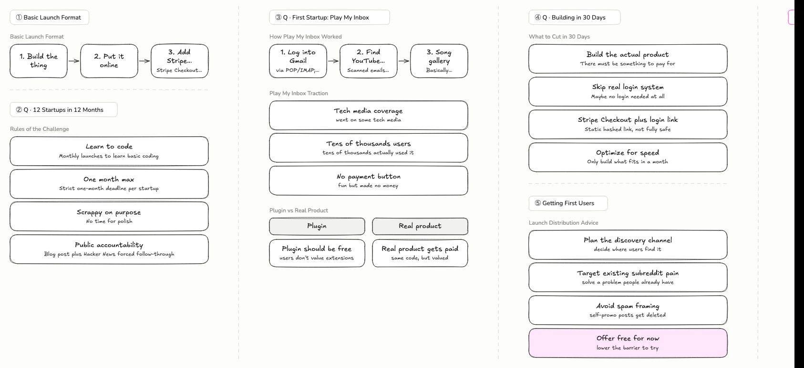
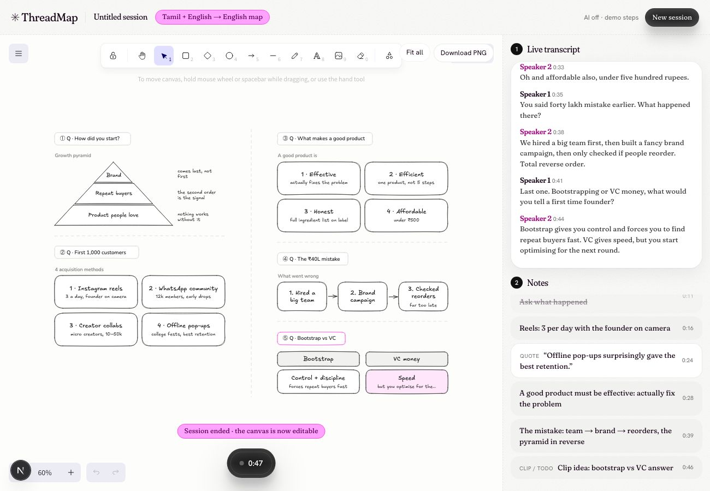
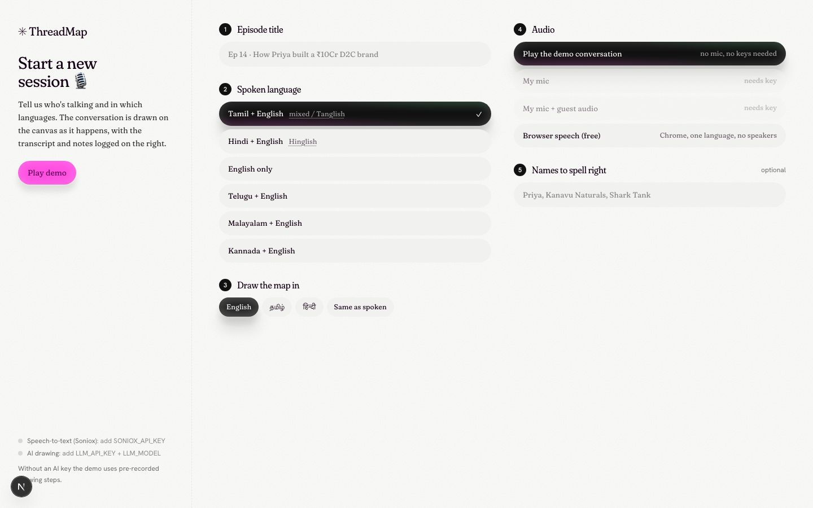

Your podcast, drawn live. While you talk.
No more scribbled notes mid-interview. Every question becomes a section; a layered framework becomes a pyramid, a process becomes steps, “X vs Y” becomes a comparison. The AI decides the shape from what is meant, not from keywords.

Drawn live from 9 minutes of a real episode (Lex Fridman #440) by a free model. See the test report.
Project documents
PRDProblem, users, requirements, shape logic, metrics, risks
Mock UXLive session, setup, recap and landing screens + design tokens
How it worksFrame-by-frame: words → AI decision → diagram
Real podcast testReplay of a real episode with a live model
Implementation docArchitecture, files, edge cases, review fixes
Idea validationMarket, competitors, willingness to pay
Product planFeatures, languages, roadmap, pricing
Technical planSTT choice, LLM, diagram engine, ops contract
30-day launch planBuild in public, viral video formats, payments
The app

Live session: canvas on the left, live transcript and notes on the right, floating controls.
